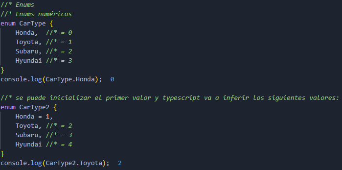
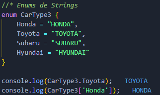
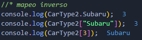

Enums
Los enum son un tipo de dato en TypeScript. Esta característica no es una extensión de JavaScript, sino una peculiaridad propia de TypeScript. Se encargan de juntar en un solo tipo de dato un conjunto finito de constantes.
Similar a un Array, al definir un enum, cada constante se le asigna por defecto un índice desde 0 y se incrementa automáticamente para el resto de las constantes.
Ventajas
- Proporciona flexibilidad haciendo más fácil expresar y documentar intenciones y casos de uso.
- Ahorra tiempo de compilación y de ejecución con el código inline en JavaScript.
- Permite la creación de constantes personalizadas de memoria eficiente en JavaScript.
Numéricos
Strings
Mapeo inverso
Es posible acceder al valor de una constante y a un nombre de constante a partir de su valor.
Nota: Se recomienda utilizar const enums para mejorar el rendimiento de los enums, permitiendo a la hora de compilar el código, generar menos líneas de código que aparecerían sin el const.